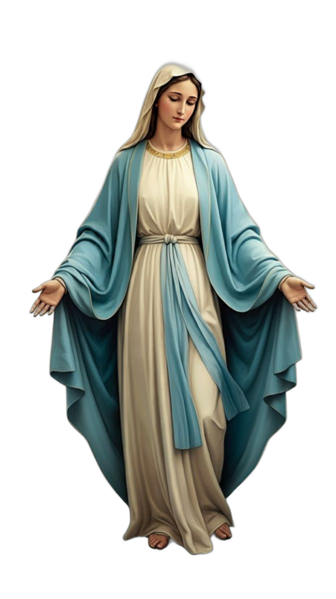
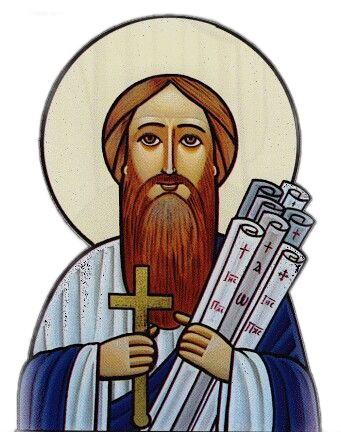

"I can do all things through Christ who strengthens me." · Philippians 4:13
A New Year… and Renewed Grace In the name of the Father, the Son, and the Holy Spirit, One God. Amen. As we begin a new Coptic year and celebrate the joy of the Nayrouz Feast, we carry in our hearts feelings of gratitude to God for all that He has done for us throughout the past days, along with renewed hope for what He is preparing for us in the days to come. Nayrouz is not merely the beginning of a new year in the Coptic calendar, nor simply a commemoration of the martyrs of the Church who gave their lives for the sake of faith. Rather, it is a renewed invitation for each of us to ask ourselves: What has God’s grace done in my life throughout the past year? And what do I desire to offer to God in the new year? The years change and the days pass, but the Word of God remains forever steadfast. We begin a new year remembering that the Church has preserved her faith throughout generations not through human strength, but through God’s work within her, the faithfulness of her children, and the blood of her martyrs who loved Christ to the very end. Therefore, the Feast of Nayrouz carries a clear message for us: the faith we have received is a sacred trust. We are called to preserve it, live it, and pass it on to those who come after us. At the beginning of this new year, may each one of us make a new beginning with God: - A new beginning in prayer. - A new beginning in loving others. - A new beginning in repentance. - A new beginning in serving. - A new beginning in reading the Word of God. - And a new beginning in discovering God’s work in our lives. Let us remember the words of Saint Paul: «“Therefore, if anyone is in Christ, he is a new creation.” (2 Corinthians 5:17)» The true value of a new year is not in the number of its days, but in how much we allow God to work within us throughout those days. On the Feast of Nayrouz, we also learn from the martyrs that true life is not measured by the length of one’s life, but by the faithfulness with which that life is lived. A person may live only a few years, yet leave an impact that continues for generations. Another may live for many years without leaving a truly meaningful impact. Therefore, we pray that this new Coptic year may be a year of impact and blessing—a year in which we leave a good and lasting influence in our homes, in our Church, in our service, and in the life of every person whom God places in our path. May you all have a blessed and joyful new year. May our Church and all her children remain under the protection of Christ. May our homes always be filled with peace and love. We pray that the Church’s website may be a source of blessing, peace, and spiritual growth, as well as an opportunity for positive communication between the Church and her blessed congregation. With sincere gratitude and appreciation to everyone who contributes to, supports, and cares for this blessed work, and with the prayers of our blessed fathers.
Browse worship times, church life, clergy, and contact details in a clear and welcoming experience.
“Run in such a way as to obtain the prize.”